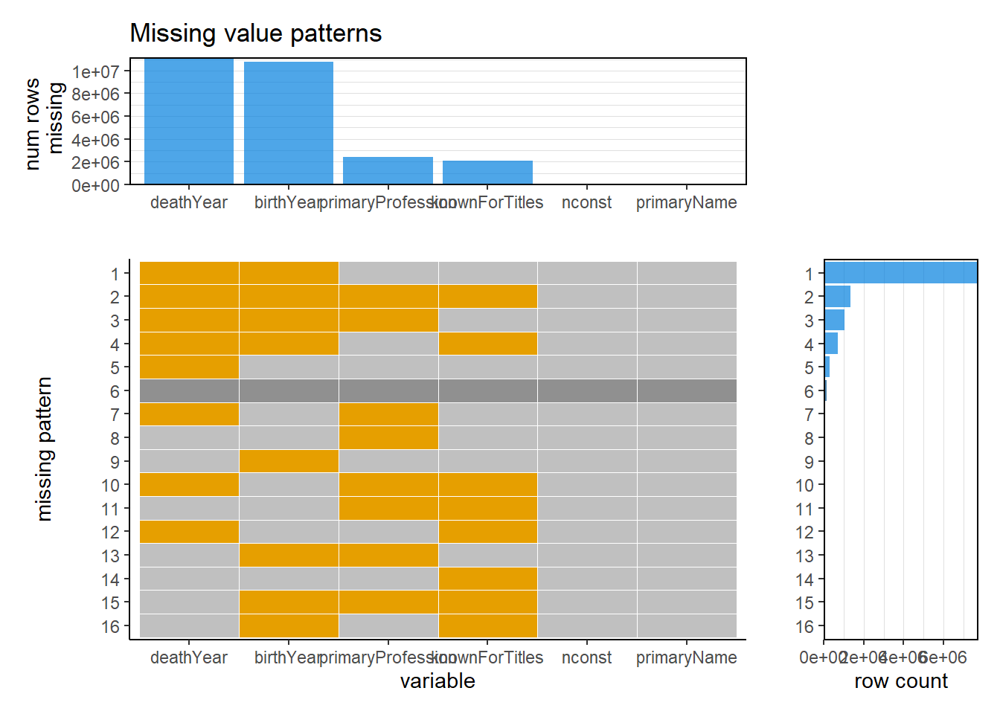
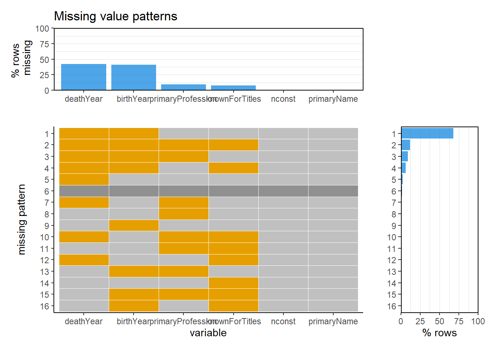

Chapter 4 Missing values
4.1 Repuired libraries
library(tidyverse)
library(readr)4.2 Load and show the initial data
basic <- read_tsv("data/name.basics.tsv.gz")
head(basic)## # A tibble: 6 x 6
## nconst primaryName birthYear deathYear primaryProfession knownForTitles
## <chr> <chr> <chr> <chr> <chr> <chr>
## 1 nm0000001 Fred Astaire 1899 "1987" soundtrack,actor,miscellaneous tt0053137,tt0031983,tt0072308,tt0050419
## 2 nm0000002 Lauren Bacall 1924 "2014" actress,soundtrack tt0117057,tt0071877,tt0038355,tt0037382
## 3 nm0000003 Brigitte Bardot 1934 "\\N" actress,soundtrack,music_department tt0049189,tt0057345,tt0054452,tt0056404
## 4 nm0000004 John Belushi 1949 "1982" actor,soundtrack,writer tt0077975,tt0080455,tt0072562,tt0078723
## 5 nm0000005 Ingmar Bergman 1918 "2007" writer,director,actor tt0050976,tt0060827,tt0050986,tt0083922
## 6 nm0000006 Ingrid Bergman 1915 "1982" actress,soundtrack,producer tt0034583,tt0077711,tt0038109,tt0036855From the output table, we can see that the missing values in this dataset are represented with "\\N". Next, we are going to replace "\\N" with NA.
4.3 Replace "\\N" with NA
basic$nconst <- gsub("\\N", NA, basic$nconst, fix=TRUE)
basic$primaryName <- gsub("\\N", NA, basic$primaryName, fix=TRUE)
basic$birthYear <- gsub("\\N", NA, basic$birthYear, fix=TRUE)
basic$deathYear<- gsub("\\N", NA,basic$deathYear, fix=TRUE)
basic$primaryProfession <- gsub("\\N", NA, basic$primaryProfession, fix=TRUE)
basic$knownForTitles <- gsub("\\N", NA, basic$knownForTitles, fix=TRUE)4.4 Show the data after transformation
head(basic)## # A tibble: 6 x 6
## nconst primaryName birthYear deathYear primaryProfession knownForTitles
## <chr> <chr> <chr> <chr> <chr> <chr>
## 1 nm0000001 Fred Astaire 1899 1987 soundtrack,actor,miscellaneous tt0053137,tt0031983,tt0072308,tt0050419
## 2 nm0000002 Lauren Bacall 1924 2014 actress,soundtrack tt0117057,tt0071877,tt0038355,tt0037382
## 3 nm0000003 Brigitte Bardot 1934 <NA> actress,soundtrack,music_department tt0049189,tt0057345,tt0054452,tt0056404
## 4 nm0000004 John Belushi 1949 1982 actor,soundtrack,writer tt0077975,tt0080455,tt0072562,tt0078723
## 5 nm0000005 Ingmar Bergman 1918 2007 writer,director,actor tt0050976,tt0060827,tt0050986,tt0083922
## 6 nm0000006 Ingrid Bergman 1915 1982 actress,soundtrack,producer tt0034583,tt0077711,tt0038109,tt00368554.5 Missing patterns
4.5.1 Missing values by column
colSums(is.na(basic)) %>%
sort(decreasing = TRUE)## deathYear birthYear primaryProfession knownForTitles nconst primaryName
## 11142577 10800160 2430129 2060798 0 04.5.2 Show the missing patterns
source("scripts/visna.R")
visna(basic)
visna(basic, percent=TRUE)
From the graph, we can see that there are no missing values in columns nconst and primaryName. Most missing values are in columns deathYear and birthYear. This might be due to the difficulty of getting the specific birth and death time and the fact that some people are not dead. Only a minority of missing values are in columns primaryProfession and knownForTitles. Furthermore, deathYear and birthYear are both missing in most rows with missing data. It might be due to the high correlation between these 2 columns. Only a very small proportion of rows have no missing values.